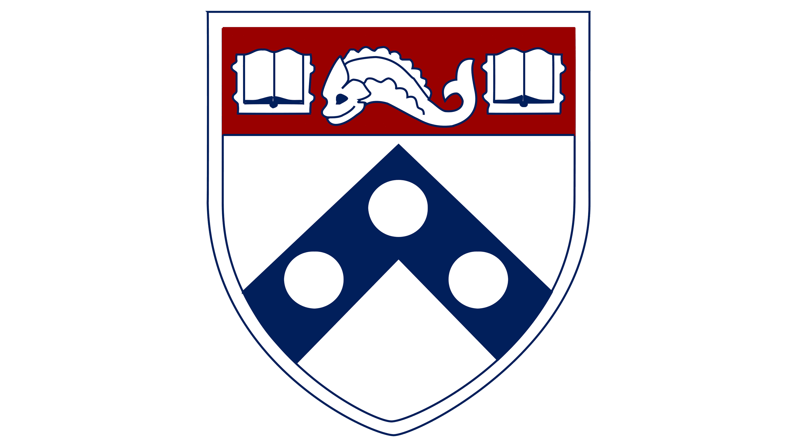
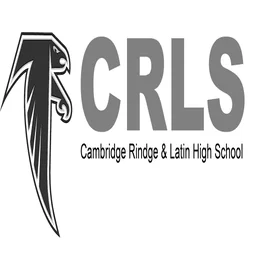
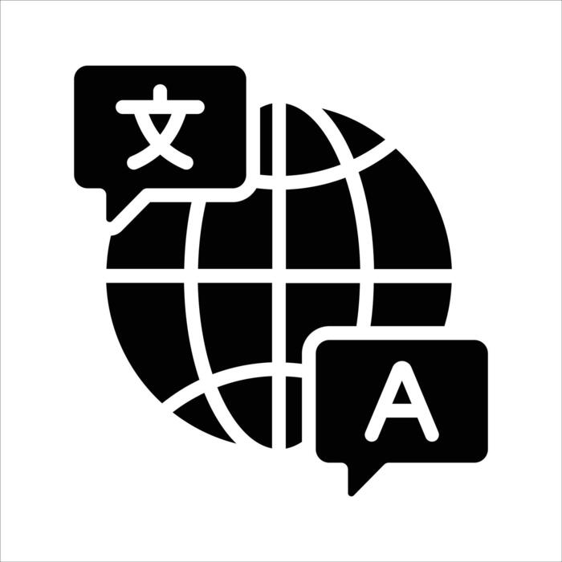
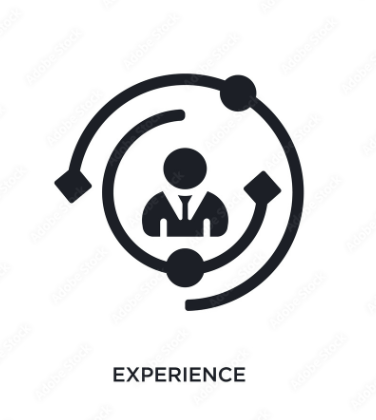
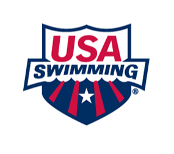
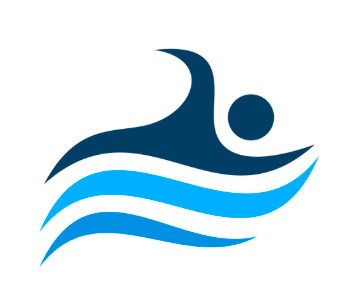
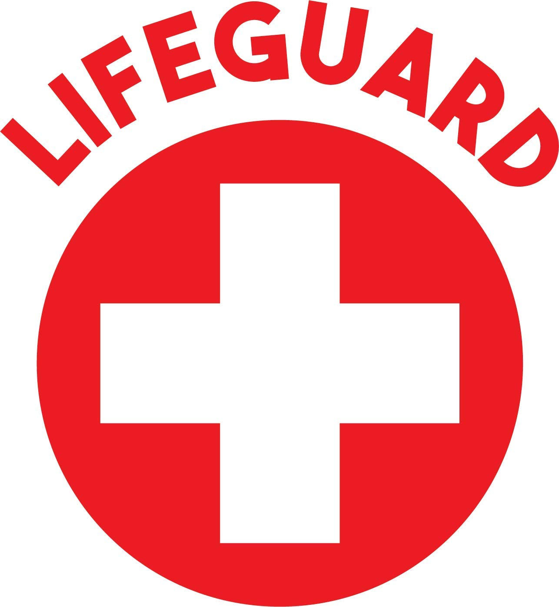
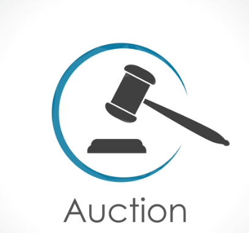
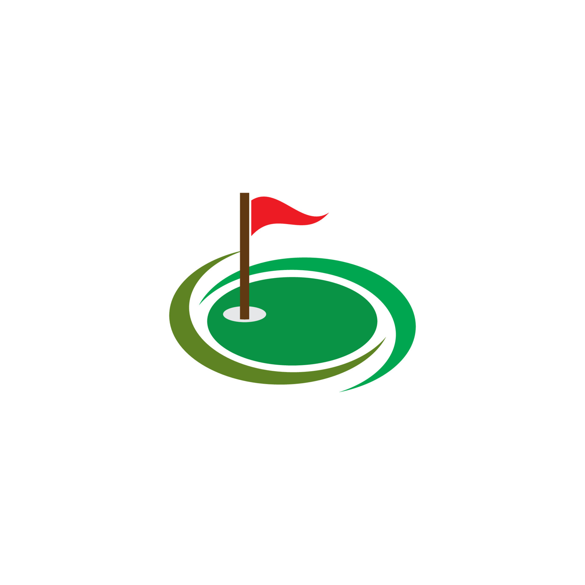

About Me
Student-Athlete & UPenn Wharton Commit
I am currently a junior at Cambridge Rindge and Latin School (Class of 2027) and an athletic recruit committed to the Wharton School of the University of Pennsylvania, where I will be pursuing Behavioral Economics and Finance. As a 4-star swim recruit competing nationally for Crimson Aquatics under Olympian Jacob Pebley, I hold multiple New England swimming records alongside national and international team trials qualifying times. I'm passionate about finance, management, math, and sports. Read more below!
.jpeg)
Education
The Wharton School at the University of Pennsylvania

Class of 2031 (Incoming Student-Athlete)
Intended Concentrations: Behavioral Economics & Finance
Athletics: NCAA Division I Varsity Swimmer
Cambridge Rindge and Latin School

Sep 2023 – May 2027 (Expected Graduation)
Grade: 11 | Unweighted Cumulative GPA: 96/100 | SAT: 1570/1600
Activities & Societies: Debate Club (Varsity Public Forum – 2x State Qualifier), Mock Trial Club, Business Club
Skills

Technologies & Tools

Python
HTML & CSS
Scratch
GitHub
Languages

English (Native)
Chinese (Native)
Spanish (Conversational)
Core Strengths & Leadership

Public Speaking & Debate
Data-Driven Problem Solving
Team Communication
Discipline
Time Optimization & Management
Networking Skills
Investing & Stocks/Portfolio Management
Experience & Extracurriculars

USA Swimming Student-Athlete (Crimson Aquatics)

Sep 2021 – Present
Balance rigorous high school academic commitments with 20+ hours of national-level weekly training under Olympian Jacob Pebley. Achieved Phillips 66 International Team Trial Qualifying Times and ranked top 16 nationally at Junior National levels.
Adaptive Swim Student Volunteer (Crimson Aquatics)

Sep 2023 – Present
Provide therapeutic aquatheraphy instruction to individuals with Rett syndrome and autism spectrum disorder (ASD) to help them achieve essential water mobility, safety, and confidence.
Lifeguard (City of Cambridge)

Jan 2025 – Present
Maintain regional water safety operations, emergency rescue preparedness, and public facility management for municipal aquatic centers.
Seasonal Handyman (Crn Auctions)

Sep 2023 – Present
Manage inventory logistics, including unloading, woodworking, handling, and systematically relocating commercial truckloads of processed lumber for business owners.
Greenskeeper & Caretaker (Fresh Pond Golf Course)

Jun 2024 – Jul 2024
Worked in 6-week City of Cambridge Youth Employment summer program. Maintained greens and tee boxes at Fresh Pond Golf Course while assisting as a customer-facing front desk helper.
Summer Workshop Student (Harvard Debate Council)

Jul 2023
Completed an intensive, residential 2-week public speaking and collegiate-level argumentation workshop centered on advanced varsity debate tactics.
Projects & Ventures

The Unified Swimmer Platform: Deckside
In DevelopmentThe definitive digital ecosystem for competitive and recreational aquatics.
Founders: Alex Daile (Wharton/Penn), Edward Zhang (Yale), Yaron Li (Cornell), Kyle Li (Columbia), Yi Zheng (Stanford), Owen Lin (Harvard)
Co-founding with other national level swimmers to build a comprehensive web platform designed to unify community discussion, searchable times/rankings databases, recruiting consulting, and a curated news feed into a singular desktop destination. Built specifically to eliminate the current fragmentation between SwimCloud, SwimSwam, and Meet Mobile.
1. Engagement Engine (Forum)
Threaded subforums across training disciplines and recruiting with user flairs tied directly to verified NCAA or club swimming credentials.
2. Advanced Analytics Moat
High-speed, mobile-optimized times database. Features athlete progression trend lines, dynamic coach depth charts tracking graduation rosters, and custom projection algorithms.
3. Monetization & Services
Integrated recruiting tools for collegiate scouts, verified private coaching marketplaces, and video-upload technical stroke analysis pipelines. Also offering recruiting consulting meetings for aspiring collegiate athletes.